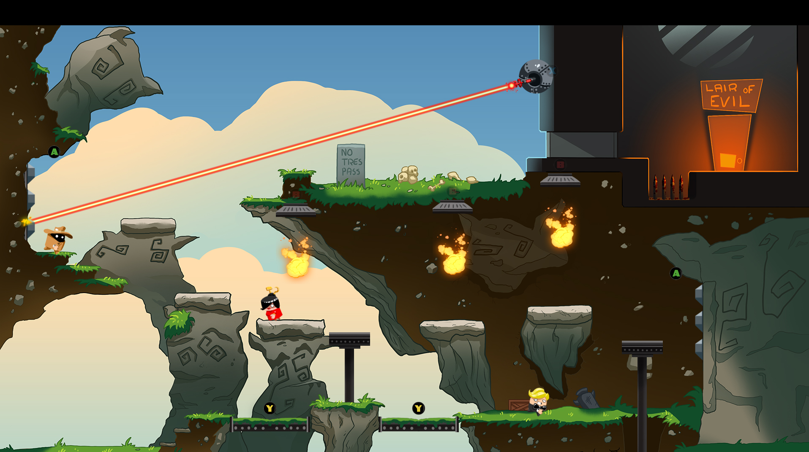

André Lincoln Read
Background
My background is in programming games and software engineering, but I also have experience in game design, interaction design, level design, and tutoring. My strongest asset is being able to develop a game from conception to publishing, through the entire development cycle.
Enki
Winner Rising Star of the Year at Spillprisen 2015
Nominee Best Story at Spillprisen 2015
Lead Game Developer on Enki, a unique web browser MMO Platformer in 2D with avatar costumization, crafting, and leveling up, made specifically for schools.
I used ImpactJS as a foundation for the game client, but we costumised it to our needs. As an example, I integrated PixiJS with the engine to achieve WebGL rendering. Other aspects included, but were not limited to, making the game playable and ejoyable on all major modern web browsers, make it playbale on mobile devices with touch controls and adjusted interface, and scaling canvas for mobile screens.
In addition to game programming, I worked heavily with the Art Direction on all GUI and interaction, developed educational content, wrote part of the dialogue and side stories, did level design, and contributed to the design of the crafting system.

BoOooo
Nominee Best Innovation at Spillprisen 2015
Nominee Best Sound Design at Spillprisen 2015
Game Programmer on BoOooo, an Android game about a ghost protecting his mansion from humans. I implemented all aspects of the game with Game Maker, in addition to working with the Art Director on all GUI and interaction, and I published it to Google Play.
'RGB Remake'
Game Designer and Programmer on codename RGB Remake, a game made specifically for Logitech's GWall. The wall consists of keyboards, where each key represents a pixel.
The concept was actually based on a prototype I made in 2011. Logitech liked that concept and wanted me to further develop it for their wall.
I implemented the game with Unity.
Check out the responseRowboat Simulator
Software Engineer for Oslo Fjord Museum, making an interactive rowboat experience. I worked closely with a movie director and a hardware engineer. In order to accomplish what we wanted, I had to learn about codecs, and synchronize several video files to imitate a higher resolution video. The video speeds up or down depending on your rowing abilities, and the rowboat plays random sounds for every pull. There is also a menu where you can pick the scene to row by using your oars. All done in C#.
N.E.F. Nevronus
Winner Best Idea for a contest held by the Norwegian Epilepsy Organisation
Programmer and Interaction Designer on N.E.F Nevronus, an educational web-based game that debunks myths about epilepsy in a fun and engaging way. I implemented the game with ImpactJS, and I ported the game to Android and iOS with CocoonJS. I also submitted the game to Google Play and AppStore.

Imal Lesing
Web Developer on Imal Lesing, an educational game for children to learn writing letters.
I implemented the client-side of the application with Phaser.io. The customer specifically asked for a Single Page Application (non-native) for mobile devices.
Jamming
Like musicians are jamming together, so do game developers. They provide invaluable experience to getting stuff done.
The following section is a collection of some my jams.
Agents vs. Super Villain
Winner Norwegian Championship in Gameplay 2015
Programmer on Agents vs. Super Villain, where three players compete against each other for glory while the fourth player controls the villain.
Since the prototype won National Championship of Gameplay, the team received a grant from the National Film Institute to further develop the concept.
Gravity
Finalist Norwegian Championship in Gameplay 2012
Game Designer and Programmer on Gravity, where you must exploit gravity with your limited amount of fuel to complete mission objectives.
This was a family project. While I did the implementation my brother did the art work with MS Paint, and our dad did voice.
I got permission to use music from the Norwegian artist Philter.
Favourite Games
My first computer game was Jazz Jack Rabbit that I got for Christmas in 1994.
Early favourites includes an array of strategy games, like Theme Park, Sim City 2000, The Settlers II and III, Age of Empires I and II, and Heroes of Might and Magic III.
One day, sometime in 2003, a friend introduced me to Warcraft III. I remember that day quite well. It became the game I've played the most hours in my life.
I also loved Age of Mythology, Age of Empires III, C&C Generals, Dawn of War, and the Battle for Middle Earth games. Fair to say, RTS games have a special appeal to me.
However, I've also been an avid console gamer most of my life. I have good memories with games like Final Fantasy VIII, SSX Tricky, NBA Street, Halo: Combat Evolved, and Mass Effect.
Since I used to write game reviews, at one point I owned over 50 PS2 games. And I've been passionate about games of most genres. The only exception I can think of are horror games.
The last couple of years the games I've enjoyed the most have been League of Legends, Dota 2, Civilization V, and Terraria.
Hobbies
Fotball, hiking,